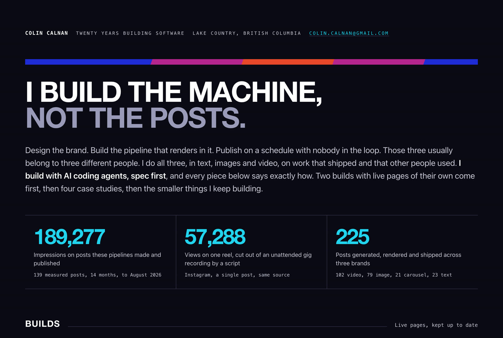
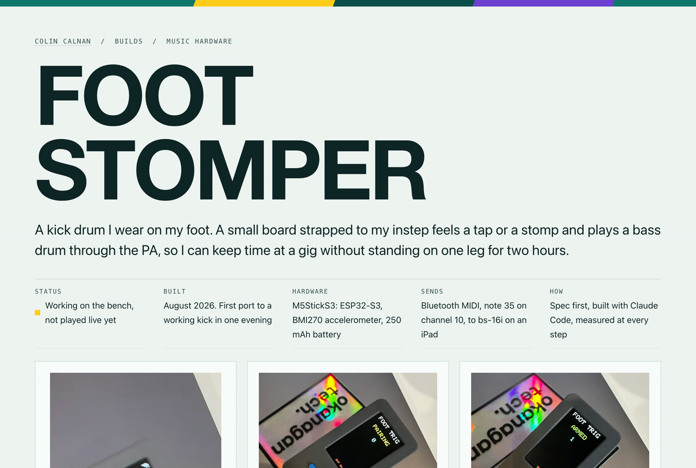
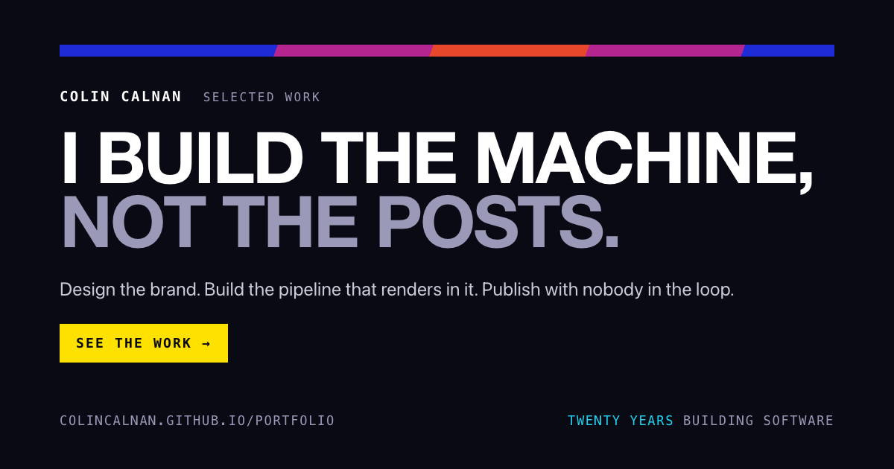
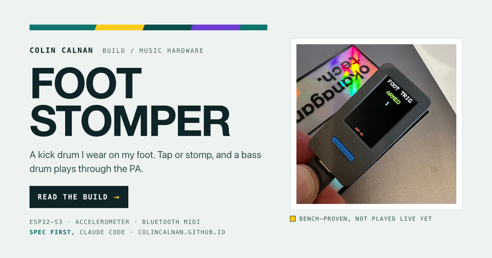

Colin Calnan / Builds / Design system
Bold Talks
The design system every page of mine is built on. It started with Shawn Kanungo's keynote slides, and it's written down so an AI agent can read it and get the page right the first time. It's let me spin up a page in minutes rather than hours, and it's how I build in public without it eating my evenings.
- Status
- In use on every page I publish
- Inspired by
- Shawn Kanungo's keynote slides, studied April 2026
- Designed
- June 2026, in Claude Design, for a talk
- Became a system
- 2 September 2026, two days after Vercel's post
- Parts
- A design.md for judgment, a stylesheet for mechanics, themes for values
- Read by
- Claude Code, which loads the design.md as a skill


Where it came from
It started with Shawn Kanungo.
In April 2026, getting ready for a talk, I studied the slides I wanted mine to feel like: Shawn Kanungo's keynotes. I pulled 41 stills from his talks and wrote down what made them work. Four things came out of it, and they're still the first four rules of the system.
One idea per unit
If you can't say what a slide is about in four words, it's two slides.
Text is the design
Typography does the visual work. Decoration is never added.
Scale creates impact
Text that feels too big is usually right.
Bleeds are intentional
Letting text crop at the edge makes the idea feel bigger than the screen.
Some of the look came straight off his stage screens too. The stripe across the top of every page I make comes from the diagonal cobalt, magenta and red blocks behind one of his talks. The yellow comes from his habit of setting a second line in yellow under a white one. The heavy, condensed, all-caps type filling the frame is his.
The idea underneath all of it, which I noted down as his Instagram rule: every slide should be something a person would want to photograph and share. That's also a decent test for a web page. I took the written study into Claude Design, which turned it into a design system for the June talk, and I named it Bold Talks.
From my own style study of 41 Kanungo keynote stills, April 2026. None of his slides are reproduced here, only what I learned from them.
Why a system
An agent with no brand makes a different page every time.
Ask a coding agent for a page and you get its default look: a centred hero, three rounded cards, a gradient somewhere, and a typeface every other generated page uses. Then you spend the next hour pulling it back toward something that looks like you. Describing your brand in a prompt doesn't fix it either, because every model reads the description a little differently.
On 31 August 2026 Vercel published how they solved this for their own agents: How our agents build on-brand pages with design.md. Three parts. A design.md written for an agent to read, a public stylesheet that carries the mechanics, and an evaluation loop of automatic checks plus a human review. In their test, pages built with it had 57% fewer mechanical failures: 39 against 91 across six pages.
I already had a look I liked. Two days later I turned it into the same shape.
Vercel's figures are theirs, from the post, published 31 Aug 2026 by John Phamous.
How it works
Three files, three jobs.
In the files it's called Ground. Bold Talks is the look, Ground is the system that lets an agent reproduce it.
Write the judgment down, for an agent
design.mdis 289 lines of plain prose: who's reading the page, what counts as evidence, what to lead with, what to refuse. It carries skill frontmatter, so Claude Code loads it as a skill before it builds anything under my name.Name what things are, not what colour they are
The stylesheet only speaks in roles. A page asks for
--gr-groundor--gr-ink-2, never a hex value. The themes supply the values, so the same page can switch look without being rewritten.A few themes, not a free-for-all
Night is the original Bold Talks palette and runs the portfolio. Paper and document cover long reading and print. The teal theme on these build pages is the newest, and the light side of the system.
Build from a short list of parts
The rail down the left, the numbered steps, the plate every image sits in, and the evidence line: a small mono line under every claim that says where the number came from. The agent picks from these names instead of inventing layout.
Refuse on purpose
No rounded corners, no shadows, no icons standing in for headings, no gradients except the stripe, no em dashes. The common generated-page reflexes are named in the file, because a pattern with a name is easier to refuse.
**Lead with the artifact, not the adjective.** Show the output, then say what it is. **Say "I built" only where it is true.** Where there was a partner, name the split. Where a number is unverified, leave it out rather than soften it. **Design in monochrome first.** Add the accent only where it changes meaning: a link, a focus ring, a mark, one emphasis. **Every number carries its source on the same screen.** That is the signature device.
From projects/ground/design.md, which opens with the four rules from the Kanungo study.
The palettes
Night and teal.
Night, the original
Teal, the build pages
The teal keeps the Bold Talks yellow and violet, and moved off a cream and amber pair I'd started with, because cream and amber is the default look of half the AI-built sites on the internet, Anthropic's own included. Every pairing is checked for contrast and for colour-blind separation before it ships.
The proof
Minutes, not hours.
Commit times from the portfolio repository's history.
The time goes into the content: what the build is, what's true about it, what to show. The layout, the type, the colours, the social card and the tags that make a link preview look right are already decided, so the agent applies them and I review the result rather than redesign it.


Building in public
This is how I show the work.
I build something most weekends and most of it used to stay on my laptop. Now every build gets the same four things, and the design system is what makes the last two cheap.
A build log
Notes and clips dropped in while I'm working, even one line. Only things that actually happened.
A build page
What it is, how it works, the real numbers with their sources, what fought back, and what it still gets wrong. Like the Foot Stomper and the Gig Splitter.
A social card
Generated from the page's own details, so a shared link looks finished everywhere it lands.
A post
A short reel or a write-up that names one decision I made, and points back to the page.
How AI was used
Designed with AI, applied by AI, judged by me.
Designed in Claude Design
My written study of Kanungo's slides went into Claude Design in June 2026, which turned it into the Bold Talks system and exported it as code for the talk's deck.
Written down with Claude Code
The move from a look to a system, the tokens, themes and design.md, was built in Claude Code on 2 September.
Applied by an agent every time
Every page since, including this one, was built by Claude Code with the design.md loaded, then checked by me against it.
What stayed mine
The rules themselves. Several are my calls against the file's own defaults: no max-width on text, the teal off cream and amber, and a light side for builds while the portfolio stays dark.
Still open
What it doesn't do yet.
The automatic checks
The design.md describes fourteen checks a page has to pass, from contrast to "every number has a source". The script that runs them isn't built yet, so for now the check is me. That's the piece of Vercel's loop I'm missing.
A public URL
Vercel's design.md is public, so any agent can load it. Mine lives in my workspace. Publishing it is the next step.
One home for the teal
The teal theme lives in the build pages' own stylesheet for now, not yet alongside night and paper in the system itself.
Timeline
From a keynote study to a system.
| When | What happened |
|---|---|
| Apr 2026 | A study of 41 stills from Shawn Kanungo's keynotes, written down as a style guide. |
| 8 Jun | Bold Talks, designed in Claude Design from that study, exported into the deck for a talk. |
| 31 Aug | Vercel publishes how their agents build on-brand pages with design.md. |
| 2 Sep | Bold Talks becomes Ground: semantic tokens, three themes, and a design.md an agent can read. The portfolio is rebuilt on it the same day. |
| September | The teal theme, the first build pages, and social cards generated from the system. |
- design.md
- CSS custom properties
- Claude Code skills
- Claude Design
- Headless Chrome